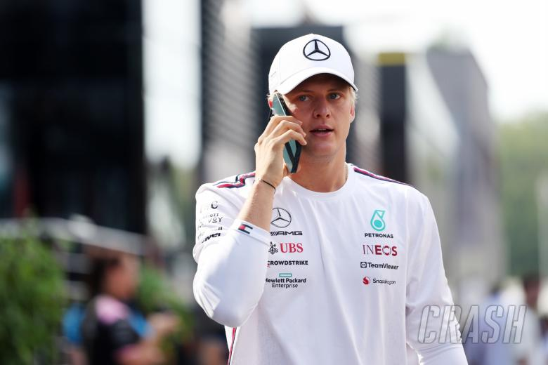

Mi padre siempre me apoyaba mucho en todo lo que yo estaba haciendo en el karting. Por supuesto. Yo creo que él intentó aportarme diferentes enfoques para ver lo que era mejor para mí, y al final él me decía siempre: “haz lo que amas”. Y para mi, lo que más he amado siempre ha sido correr, siempre he amado lo que he hecho y cada vez iba a más eventos mayores, carreras más grandes y para mí siempre fue muy bonito que él ocupara su tiempo estando conmigo siempre en el motorhome, debatiendo sobre carreras. Fueron buenos tiempos.
